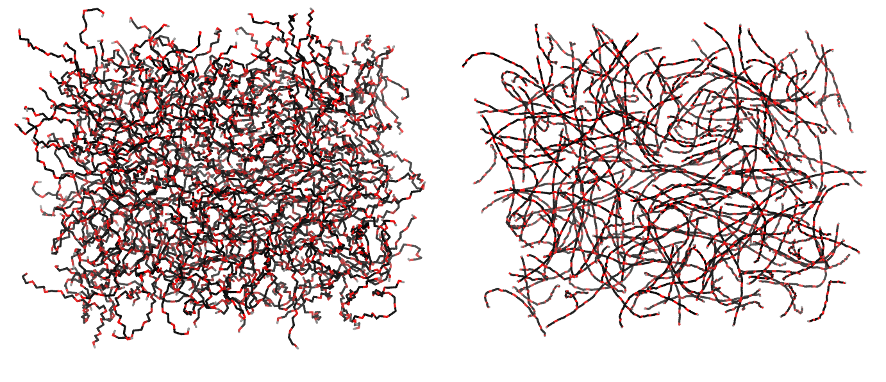
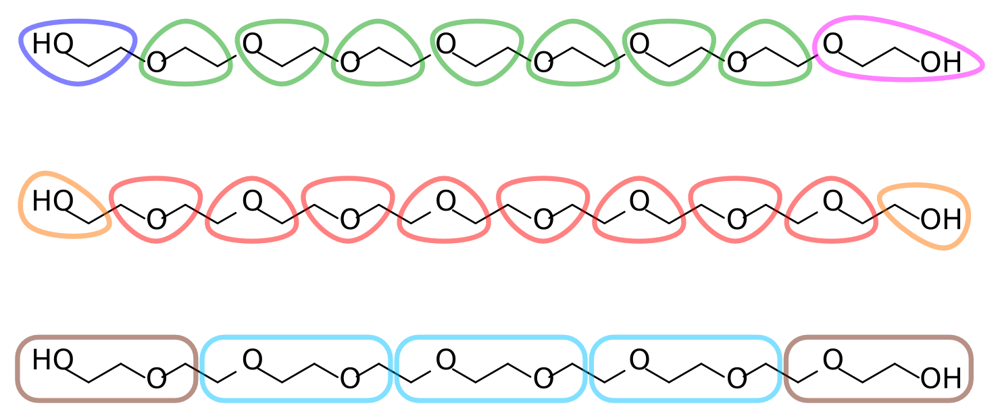
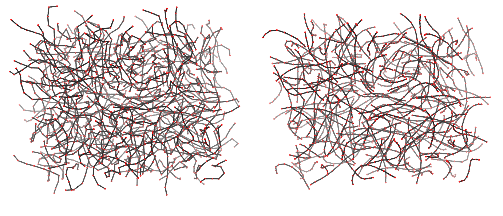

Polymers
The material offered in this page is LEGACY material. This means that it either pertains to older iterations of the Martini force field and/or that it is no longer actively supported. However, this does not mean that there aren’t cool things to be learned here! Have a look! If you are looking for the current iterations of the Martini force field lectures or hands-on tutorials, click here to go back!
General aspects
Parametrization of polymers follows pretty much the standard procedure for the parametrization of any other molecule. There are, however, some factors to consider:
Sometimes you’ll want a polymer to reproduce certain particular features known from experimental observations or atomistic simulations. These features can be, for example, a target radius-of-gyration or helical propensity. These often depend on more bonded and nonbonded interactions than those dealt with when parametrizing simpler molecules. Try including longer-range distances and angles as target distributions, and understand what may be preventing your CG polymer from following those.
When dealing with an oligomer, the behavior of residues close to the termini is often not representative of that of the rest of the molecule. It is a good idea to obtain reference distributions from a polymer chain long enough that a consistent behavior is obtained for the central residues. If the termini behave very differently, it might be worth assigning a different set of potentials to those.
You may find that Martini cannot faithfully reproduce the long-range structural organization you aim for, no matter how many potentials you use or how finer you make the mapping. Before you throw in the towel it can be an acceptable approach to use an elastic network to restrain the beads to the conformation you want (see the example of proteins). The flexibility afforded by the network is tunable, and might be enough to satisfy your needs.
Some polymers can establish different intramolecular dipole interactions or salt bridges depending on conformation (think carbonyl–amide h-bonding in proteins). A single set of bead types may then be insufficient to describe the effective polarity of all the conformations of the polymer. This requires a different bead type assignment for each conformation, just like the polarity of backbone beads in Martini proteins depends on their secondary structure. Beware that such an assignment is static, and won’t change during a simulation if the conformations change. This approach is therefore most useful when you are sure that the polymer conformation will be kept (for instance, when restraining it with an elastic network).
In the case of polymer melts — or even when using small molecules as a solvent — achieving the right density becomes important. The iterative parametrization steps should take this into account.
When parametrizing polymers of varying length and residue composition, matching of partition behavior is probably best done on a per-residue/fragment basis, rather than whole molecules. This should give the most transferable behavior.
Parametrization of a polymer melt: 200 PEG 9mers at 300K
Download the base files for this tutorial here. Download and unpack the archive (tar -xzvf PEG_parametrization.tgz unpacks to the directory tree PEG_parametrization).
In this tutorial we carry out the Martini parametrization of a PEG9 molecule from target atomistic data. The focus will be to match the mapped distribution of bonded conformations, as well as average density and molecular radius-of-gyration. For the time being, bead assignment will be only done to match the Martini building blocks — without adjustment for the matching of partition properties.
This exercise will involve the use of several GROMACS tools as well as some scripting (example scripts are provided, but beware that they were made specifically for this tutorial and will most likely not work for parametrizing other molecules without modifications). We will deal with some of the issues faced when parametrizing new molecules in general, and some particular to polymers. It is very useful to quickly read through the tutorial on molecule parametrization (particularly the flowchart in that page), as it sets out most of the general Martini parametrization workflow. Finally, in this tutorial we suggest some filenames, but these are by no means binding. Each user should feel free to adapt them to their organization scheme.
Martini models of PEG have already been published (see Lee et al. or the newer (http://pubs.acs.org/doi/full/10.1021/acs.jpcb.5b03611)) The aim of this tutorial is not to supplant them but rather to provide an example workflow of parametrization. For the same reason an automatically generated topology was deemed sufficient for generating the target atomistic data.
The atomistic target data
We start off with the target atomistic trajectory of the system to parameterize. In the downloaded file bundle you’ll find the AA directory containing a 100ns trajectory of a melt of 200 PEG 9mers. These data were obtained from a PEG9 topology generated by the Automated Topology Builder for the GROMOS 54a7 united-atom forcefield; you’ll find it under PEG9.itp (the naming and atom order were slightly modified compared to the .itp in the ATB repository, but the potentials are unmodified). Be sure to take a look at the .itp file to have an idea about the atom ordering and naming in the molecule.

Mapping
With the atomistic data at hand it is time to decide on an AA-to-CG mapping. Each ethylene glycol residue consists of two methylenes and an ether oxygen (in our target data, which comes from an united-atom topology, the methylenes are represented by a single particle each). A reasonable mapping strategy is then to assign each residue to a CG bead. This results in a 3-to-1 mapping, slightly finer than the typical 4-to-1 of Martini. Alternatively, two residues can be assigned to a single bead, for a 6-to-1 mapping. Figure 2 depicts different possible mapping strategies for PEG. Note that in the first mapping, where each bead corresponds to an O-C-C sequence, the terminal assignments become asymmetric. This is undesirable given the symmetric nature of the polymer.

The remainder of this tutorial uses the second mapping strategy from Figure 2, where each bead corresponds to a C-O-C sequence, with two smaller but symmetric C-O-H assignments at the termini. Feel free to follow your chemical intuition and choose a different mapping; this will make it more challenging and potentially interesting, as you’ll have to adapt more of the tools and files that are provided.
Coarse-graining the atomistic trajectory
Using the chosen mapping we can proceed to transform sets of atomistic coordinates into CG ones simply by finding the center of mass of each group of atoms in a CG bead. There are different ways to proceed with this so-called “forward mapping”.
The first method uses the GROMACS tool gmx traj to output centers of mass of arbitrary selections as a function of time in trajectory format. This requires that an index file be created containing one group per bead, each group listing the respective atomistic atoms. As you can imagine for a system such as ours this index file requires a bit of scripting to prepare as there’ll be 2000 groups (or as many CG beads as your mapping yields). The script indexer.py will do this for you, but edit it to understand its workings and to ensure its parameters are correct for the mapping you chose.
python indexer.pyYou should now have produced the index file mapping.ndx. To use the index file with gmx traj, ask for 2000 groups, set the -com flag, and point it to the PBC-treated AA trajectory, the compiled topology, and the index we just prepared:
seq 0 1999 | gmx traj -f AA/trajpbc.xtc -s AA/topol.tpr -oxt traj_cg.xtc -n mapping.ndx -com -ng 2000 -b 20000gmx traj will prompt you for which index groups correspond to the 2000 that were asked for with the -ng flag. By piping the output of seq 0 1999 into it we automate the process and ensure they are output in the correct sequence. Here we also used the -b flag to discard the first 20ns as equilibration time. gmx traj yields an .xtc trajectory file, traj_cg.xtc. The trajectory traj_cg.xtc contains the mapped atomistic data and reflects the coarse-grained behavior of the atomistic model. To serve as a starting point for CG simulations later, and also for visualization and analysis purposes, it is useful to also have a .gro file; the same gmx traj command can be adapted to that end, by setting -b 100000 to only pick the last frame and choosing an output filename with the appropriate extension:
seq 0 1999 | gmx traj -f AA/trajpbc.xtc -s AA/topol.tpr -oxt cg.gro -n mapping.ndx -com -ng 2000 -b 100000The second forward mapping method, which we won’t cover in detail here, makes use of the backward tool. This script was developed to automate the backmapping of CG structures to atomistic, but can also perform forward mapping. It uses mapping files to decide which atoms to calculate centers of mass from, and is therefore more flexible than the approach above. It is of particular interest when dealing with polymers with arbitrary sequences of different residues, for which the scripting of the indexation is not as straightforward.

Extraction of properties and bonded distributions (atomistic)
Armed with mapped .xtc and .gro files you can now use gmx distance and gmx angle to extract the relevant bonded distributions of the beads. To this end index files will have to be generated specifying which bonds/angles/dihedrals to measure (see the -h flag of each command). Again, the generation of thousands of atom pairs (for bonds), triplets (for angles), or quadruplets (for dihedrals) requires some scripting, and the gen_indices.py script is there for you. If you inspect the code you’ll notice that the indices will be split between _core and _term groups. These groups separate bonded interactions involving the termini from those that only contain core beads. This might be desirable because a) the termini were mapped differently than the rest of the molecule, and b) even if they were mapped just as the core beads, termini often explore different or more extreme bonded configurations. (Also note that the core groups are split in two. This has the practical reason that the gromacs tool gmx distance apparently has a bug when too many pairs are specified. You can use this to your advantage by now having two samples of the bond distriburtions for the core bonds…)
python gen_indices.pyNow invoke each analysis tools on each index group; remember to change the output filename when selecting the termini and the core groups, in order not to clobber results:
gmx distance -f traj_cg.xtc -len 0.35 -tol 0.8 -n bonds.ndx -oh bonds-1.xvg
gmx angle -n angles.ndx -f traj_cg.xtc -od angdist.xvg
gmx angle -type dihedral -n dihedrals.ndx -f traj_cg.xtc -od dihdist.xvgYou’ll be repeatedly running these same commands later when attempting to reproduce these distributions. The bash script calc_dists.sh does that for you; just be sure to adapt file names and locations.
Now view the distributions you obtained. Compare the termini with the core ones and decide which will warrant different potentials and which can be treated as the same. You can also at this point predict the distributions that can be problematic to reproduce:
those that are obviously multimodal, with spread apart modes;
those that are concentrated around a very narrow parameter space and will therefore require very strong potentials;
and the dihedrals that span bond angles that can extend to 180 degrees.
At this point it is also a good idea to calculate the density of the atomistic system, as we’ll be wanting to match it as well (you can instead try to match the known experimental density, if you have it). If an .edr file is available one can use the gmx energy tool to this end. However, in the absence of an .edr file one can simply use
gmx traj -f traj_cg.xtc -ob box.xvg -s cg.growhich will extract the box vectors as a function of time. These can then be averaged using gmx analyze:
gmx analyze -f box.xvgThe average volume can be calculated from the first three averages (which correspond to the average X, Y, and Z box sizes, respectively, in nm). From the average volume you can readily calculate the average system density.
As an additional parametrization target we’ll be aiming to reproduce the radius of gyration of the atomistic PEG molecule. You can use the gmx polystat tool to calculate it, but it requires a .tpr file to know the number of atoms per molecule. The best is to leave this for now and calculate it later when you get a .tpr for the CG runs, which will have appropriate molecule information.
Creation of an .itp file
For this step it might be useful to use the .itp of a preexisting molecule as a template for your own (take your pick from the several available at here). Since there will be an iterative optimization procedure involving several attempts at this file, it is wise to start off by placing it in a subdirectory (take0 seems an appropriate name). This will keep chaos from ensuing when generating new trajectory and distribution files, which would get mixed with the atomistic ones or with those from other iterations. This tutorial assumes you’ll be working in a subdirectory for each take.
[ moleculetype ]Under the [ moleculetype ] directive you should input the name for your molecule. This is the name you’ll be referencing in the .top file. Next to the name is the default number of bonded neighbors that are excluded from nonbonded interactions. Standard Martini procedure is to exclude only first bonded neighbors, by setting this value to 1. Should more exclusions be required it is usually best to add them individually later in the topology.
[ atoms ]This directive defines the atom properties of the molecule. Remember that in our CG system molecules have 10 atoms (beads). At this point atom and residue naming are of little importance (but remember, 5 character limit). The atom types, however, control the nonbonded interactions and are a central part of the coarse-graining process. Again, you’ll use your chemical intuition, and a copy of the 2007 Martini paper, to judge which bead type better represents each mapped moiety: find Table 3 in the paper, and in there find the building block that most closely matches the one underlying each bead. For the C-O-C mapping it is probably one of the N* bead types, whereas for the termini one of the P* ones. A correct choice means that the interaction of a bead with different solvents follows the correct partitioning energies (see the solvents used for parameterization in the paper’s Table). The idea behind Martini is that, by matching this partition behavior, we will get a consistent strength of nonbonded interaction between the bead types in the Table.
Martini also provides the so-called S-beads (SP, SN, etc.). These are smaller versions of regular beads that can pack closer together but with a shallower nonbonded energy well that keeps them from solidifying. They are typically used for mappings finer than 1-to-4, and might be useful in our case if the density of the system turns out to be too low. Be aware that these beads only pack closer to other S-beads. Interaction with regular beads follows the same potential as between regular beads.
For the rest of the [ atoms ] directive be sure to set all beads to 0.0 charge and to assign each to their own charge group. Leave masses blank for the default value. When coarse graining, our bonded parameters aim to reproduce statistical averages and not the frequency of real quadratic or cosine oscillations; the meaning and importance of bead mass is therefore less strict as for atomistic forcefields.
[ bonds ], [ angles ], [ dihedrals ]Now begins the trial-and-error part of the procedure. Write down for each relevant section the atoms involved in the potential, the function number, and your first guess for the equilibrium value and potential force.
Martini typically uses type 1 bonds, and forces usually fall in the \(10^3 kJ/mol‧nm^2\) range. Angles are typically type 2, as these don’t get unstable at \(180^{\circ}\). Forces usually fall in the \(10^2 kJ/mol\) range. Finally, dihedrals are typically assigned either type 1 (with forces in the \(10^0 kJ/mol\) range, and with an appropriate multiplicity) or type 2, when keeping structures like rings planar (forces in the \(10^2 kJ/mol‧rad^2\) range).
This said, you, as supreme parametrizer of your system, have full choice over which potentials to use (even non-analytical tabulated ones are possible, although they are a bit off the scope of this tutorial). However…
*** DIFFICULTY WARNING ***
This mapping involves bond angles that can reach \(180^{\circ}\). Applying dihedral potentials over these bonds will lead to severe instabilities. We recommend, for the sake of finishing the tutorial in a timely and successful fashion, to skip the reproduction of the dihedral distributions. If you dare go down that path take the following advice:
- Use stronger angle potentials that prevent beads from becoming collinear (the type 1 angle might be an option here);
- Use a smaller simulation timestep than the typical 20fs, to give those angle potentials a chance to act on the molecules;
- Try out the new restricted bending angle potentials (angle type number 10) that we just implemented in version 5.0 of
GROMACS! They avoid collinear bonds without requiring any lowering of the timestep or changes to the dihedral potentials.
With that out of the way, we’re ready to test-drive our brand-new CG molecule (no more directives should be needed in the .itp file).
Create a .top file that #includes the martini_v2.2.itp file (this is where bead interactions are defined) as well as the PEG .itp you just created (you can use the atomistic topol.top as a template). Specify how many molecules you have in the system, and you’re done.
Energy minimization and simulation of the system
The first step is to generate a CG configuration stable enough to start a simulation from. Use the supplied min.mdp together with the just-created .top file and the cg.gro you forward-mapped earlier:
gmx grompp -f ../min.mdp -p topol.top -c cg.gro -o minYou will likely receive a warning that your atom names do not match. This is ok to ignore as long as you understand why that difference arises (and you do, right?). Just rerun the grompp command with the -maxwarn 1 flag, and minimize the structure with:
gmx mdrun -v -deffnm min -rdd 1.4After finishing mdrun will dump the minimized coordinates as the min.gro file. Note the use of -rdd 1.4. This tells GROMACS, when parallelizing, to search a bit further into neighboring cells for bonded partners. This might not be required in your case, and there is a performance penalty associated with it. If however it is needed and you leave it out, you’ll get spurious error messages complaining about “missing interactions”.
At this point it is instructive to read min.mdp and see the options required for Martini. In this particular case the electrostatic treatment is not necessary as we don’t have charges in our system. Also note that the typical smoothness of Martini potentials lets us use the straightforward steepest descents minimization (integrator = steep in the .mdp) without fear of letting the system get trapped too far away from the energy minimum.
From this point, prepare an MD run for equilibration with:
gmx grompp -f ../eq.mdp -p topol.top -c min.gro -o eqYou should get no further warnings about atom names, since they are sorted out in min.gro. You might, though, be warned that your timestep is too large for the predicted frequencies generated by some of your bonded potentials. If this is your first try, do lower the force constants in question. If you got to these warnings after having to use a high force constant to match bond distributions, it might be a good idea to replace them by constraints. You might also get warnings about the not-so-weak coupling nature of the thermo- and barostats if you decrease their time constants. These are usually safe to ignore with Martini, although it will be up to you to demonstrate that pressure and temperature behavior is adequate.
Run the equilibration and (finally!) follow it up by a production MD simulation of your parametrized PEG!
gmx mdrun -v -rdd 1.4 -deffnm eq
gmx grompp -f ../md.mdp -p topol.top -c eq.gro -o md
gmx mdrun -v -rdd 1.4 -deffnm mdTake the time of your simulation to read the .mdp file and understand its thermostatting and barostatting options. Martini has traditionally been coupled to the berendsen thermo- and barostats, although other scheme combinations can be used, in this case v-rescale temperature coupling and parrinello-rahman pressure coupling. The robustness of Martini and of the berendsen schemes allows one to skip, for most simple cases, any NVT pre-equilibration.
If you get errors at this point there can be multiple causes, and GROMACS is not always able to exit cleanly and in an informative way. The most frequent cases are:
- Dihedrals, or type 1 angles, over bonds that become collinear;
- Tight networks of constraints that cannot be respected properly for the given timestep or for the requested accuracy in the .mdp (see the lincs_order and lincs_iter options);
- Misconstructed or not properly minimized starting configurations.
There can be, of course, many other causes for instability. Reducing the timestep often helps, but this is undesirable (aim for the typical Martini step of 20fs). Sometimes running a short NVT simulation with a small timestep allows the system to become stable enough to continue in NPT with larger timesteps. In addition, a good diagnosis process is to create an .mdp that outputs every simulation step. This will let you identify precisely the events that lead to a crash.
When you get a stable run it is time for…
Extraction of properties and bonded distributions (CG)
At this step you will simply rerun the analysis tools on the CG trajectory. Very importantly, prior to analysis you must make your molecules whole across the PBC:
gmx trjconv -f md.xtc -pbc mol -o trajpbc.xtc -b 1000The -b flag discards the first 1 ns as equilibration time. You can now use the calc_dists.sh script but be sure to adapt it for file locations.
Also calculate the system density. Unless you used tailored bead masses, gmx energy won’t be able to report it correctly. Get the average volume by simply running gmx energy on the output md.edr file, and compute the density using the known system mass.
Finally, use gmx polystat to calculate the average radius of gyration of the polymer chains. With the .tpr from this run you can now also calculate the radius of gyration of the mapped atomistic trajectory, if you haven’t already done so.
Back to the drawing table
Now use your favorite plotting tool to compare distributions to the target atomistic ones. Also compare the average densities and radius of gyration.
It is unlikely you nailed all the distributions and target properties spot on on the first try. It is then time to create a take1 directory and populate it with the files required for a new run. Copy over the PEG .itp and adjust it based on the distribution/property discrepancies. A good idea, to prevent long equilibration times, is to use the endfile of the previous take as the starting configuration for the new parameterization test run. Just beware of runs that end up in obviously unstable configurations, or that undergo unwanted phase transitions.
An important note when parametrizing solvents or, in this case, melts, is to check the density for too large deviations from the target value. Differences of more than 5-10% are difficult to correct alone by adjusting the bonded potentials, and you’ll probably have to rethink the bead types you’re using.
Repeat until you are satisfied with the results you’ve got. When that happens, congratulations, you’ve parametrized your first Martini polymer! Go drink a Martini to celebrate.
What next?
Free-energy verification
In our approach we focused on reproducing the bonded behavior of the polymer. The nonbonded part was addressed by choosing Martini building blocks that represent the chemical nature of PEG and that yield its correct density. The Martini philosophy, however, calls for a more careful approach where the partition properties of the resulting molecule are checked against experimental or simulated data.
Typically, free-energy is matched to partition data taken between aqueous and apolar solvents. This stems from Martini’s origins as a forcefield for biomolecular simulations. It should be stressed, however, that this sort of parametrization must be adapted to the problem under study. If, for instance, the model’s application concerns mostly interaction with hydrophobic molecules, then it’s the partition into and among those that should be aimed for.
Melt-Water partition
The solvation free energies of our PEG9 molecule have been determined by thermodynamic integration (TI) at the fine-grain level. You can access that data here. The archive unpacks (tar -xzvf TI_tutorial.tgz) to a directory tree TI_tutorial. This archive contains the atomistic data and a CG directory with H2O and Melt subdirectories ready for you to populate with your systems.
In each directory you will perform simulations to calculate the respective solvation free energy. You will do this by decoupling the nonbonded interactions between solute (a single PEG9 molecule) and each of the solvents. This decoupling will be done gradually, over 10 steps, so that it is possible to calculate a free energy difference between each. You will need the .itp file of the topology you optimized for PEG9, and two .top files: one for the melt system and another one for a 1 PEG + several waters.
System initialization
You can use a .gro file from the end of your parameterization as a starting point to calculate the solvation energy of PEG9 into its own melt. However, we need to tell GROMACS we want to decouple one molecule from all the others.
GROMACS has several ways of specifying a switching between coupled and decoupled states. Here we do it by passing the name of the molecule to decouple to the couple_moltype option in the .mdp. However, in the case of a melt this would mean all molecules would become decoupled simultaneously. The workaround for this is to copy your PEG .itp file to another name, and in there change the molecule name (let’s say PEG9X). This will allow you to specify in your .top file the two “different” molecules separately:
[ molecules ]
PEG9X 1
PEG9 199For the water system you need to create a .gro file with a solvated PEG9 chain. An easy shortcut is to use the same .gro file as for the step above but changing the .top to become:
[ molecules ]
PEG9 1
W 1990This will tell GROMACS to interpret any atoms after the first PEG as water beads. You will then need to equilibrate this system for a short period before using it for TI (use the provided eq.mdp file).
Simulation setup
To switch between the coupled and decoupled states we define in the .mdp 11 states, each with a different scaling of the Van der Waals interactions (more steps would be required to switch off Coulombic interactions, but there are none in our system). The scaling is defined by variable lambda, varying between 0 and 1. The meaning at lambda=0 and lambda=1 is set with the couple-lambda0 and couple-lambda1 in the .mdp. In our .mdps lambda=0 means a full Van der Waals coupling (couple-lambda0=vdw) while lambda=1 means a fully decoupled molecule (couple-lambda0=none).
The lambda values at each of the 11 different states are given with the vdw-lambdas .mdp directive; the init-lambda-state directive tells GROMACS which of the 10 to actually use in a particular run. The simulations will periodically output the potential energy of the system (the frequency being controlled by the nstdhdl directive). The analysis method we’ll be using requires that for a given state the energies of the same configuration under all other states’ Hamiltonians also be output. This is set with calc-lambda-neighbors=-1 (and is also why every run needs to know which other states there are).
You’ll find a TI.sh script in each of the H2O and Melt subdirectories. This file automates the generation of the 10 systems to be run. Read it carefully to understand how it changes the .mdp file for each decoupling step (hint, look for the sedstate label, that’ll be used by the sed command to create the different step files). Also notice how it links the output dhdl.xvg files to the root directory for further analysis.
Integration with MBAR
We’ll be using the MBAR integration and error-estimation method (see a detailed description of the method, and the used analysis scripts at the AlchemistryWiki). You will need to install the pymbar package. If it’s not yet installed can do so with
sudo pip install pymbar(if you don’t have sudo privilege in your workstation you can install pymbar locally to your home directory by also passing the --user flag). You will also need to install alchemical-analysis (from https://github.com/MobleyLab/alchemical-analysis). If that is all-set, run the alchemical-analysis program, telling it the output filename prefix (-p flag) the temperature (-t flag) and how many ps to leave out as equilibration time (-s flag; 1000 ps was deemed enough):
alchemical-analysis -p dhdl -t 300 -s 1000The results will provide calculations using different methods. You should use the ones from MBAR. The script output files will also let you see the individual free-energy changes between steps, and identify areas where more lambda points should be run to lower the estimate error (but beware that because of the need to evaluate energies at all the steps’ Hamiltonians if you add more lambda points all steps will have to be rerun). An alternative tutorial with a set-up for free energy of solvation calculation by TI using only gromacs tools (gmx bar) is provided by Justin Lemkul.
Free-energy verification
After the successful parameterization and simulation of your new molecule you may want to convert it back to fine detail (for instance, to proceed with a fine-grain simulation after equilibrating the system with CG). This process is called backmapping.
Due to the reduction of degrees of freedom involved in coarse-graining, the reverse process is not uniquely defined: there will be multiple atomistic configurations that can correspond to a CG grain structure. However, knowledge of the atomistic topology allows us to input more data into the process: an initial atomistic configuration is prepared where atoms are randomly placed in the vicinity of the respective CG bead. The system is then allowed to energy-minimize and equilibrate subject to some restraints. The bonded information contained in the topology leads this process into providing a consistent fine-grain configuration compatible with the starting CG one. Before continuing you can read more about the procedure here and here.
To reverse-map your coarse-grain PEG system you’ll need the backward tool, available here. Unpack it into a new folder. Now copy over to the same folder a CG .gro file (for example from your take0 directory or the one you made by mapping the atomistic structure) together with the fine-grain .top and thePEG9.itp referenced in the .top file; you can find the latter in the subdirectory AA in the PEG_parametrization material. This is enough information to recreate a GROMOS 54a7–compatible structure.
We must now teach our PEG mapping to the backmapping procedure. This is done by creating a .map file. The format is described here, but you may start by copying a preexisting file from the Mapping directory (you can also find a ready example in the root of the tutorial directory you downloaded).
In the .map file you’ll want to name your [ molecule ] as the name you used for each CG PEG residue. If you named your residues differently (say, to distinguish terminal ones) it is best to edit your CG .gro file and set them all to the same name.
Under the [ martini ] directive you’ll enter the name of the bead(s) that compose each residue. In our case each residue is composed by a single bead. Again, these beads should all have the same name in the .gro file; edit it if needed.
The [ mapping ] directive lists which force-fields this mapping is set for. It serves as a tag for when multiple mappings are available, and to let the script know what is the level of detail of the target forcefield (coarse-grained, united-atom, or all-atom). Since we’ll be backmapping to the gromos54a7 forcefield you can set this to that name (as of this writing the script knows about martini, gromos, gromos43a2, gromos45a3, gromos53a6, gromos54a7, charmm, charmm27, and charmm36).
Finally, under the [ atoms ] directive you’ll list the atom numbers and names that compose each residue, and to which CG bead they belong. The format is atom_number atom_name bead1 bead2 …) Check the atomistic .itp for the correct atom names. At this point you should ensure that the residue numbering in the .itp is consistent with the mapping. In this example, all ten beads must be given different residue numbers, but the same residue name PEG and atom name PEG. If this is not the case in your coarse-grained structure, you’ll need to edit it, which can be a painful thing to do. An alternative is to prepare a .tpr file for the CG system that incorporates the desired naming and numbering of the CG molecules and convert your coarse-grained structure with that .tpr. You should also check that in the atomistic topology there are no repeated atom names per residue. This is so because the assignment of atoms to bead coordinates is done as follows:
The bead(s) corresponding to residue n is/are read from the CG
.grofile;The name of residue n is searched in the
Mappingdatabase;The atoms from residue n in the topology are read;
The read atom names are matched to those in the
.mapfile and split across the corresponding bead(s) that were read from the.grofile;Leftover atoms that are absent from the mapping list are assigned to the first read bead.
The last rule means you can leave out of the .map file atoms specific to the termini, as this will simplify the list.
After the [ atoms ] directive you have the option to add further information as to the relative placement of atoms within beads. This is unnecessary in our case. It would be required if dealing with atomistic topologies that might minimize to the wrong conformers, such as when chiral center might get inverted.
Once this is done the .map file must be placed in the Mapping directory (and actually have a .map extension). It is then only a matter of running the following command (adapting for the correct .gro and .top filenames, and you may need to edit the initram.sh script - downloading initram-v5.sh may save you some of that - for the settings of energy groups and energy group exclusions, which by default are Protein, Membrane and Solvent, which are not relevant here and actually lead to gromacs aborting):
./initram.sh -f cg.gro -p topol.top -to gromos54a7This shell script automates the invocation of backward.py to generate the starting atomistic structure, and the running of an appropriate set of minimization and restrained equilibration steps; both initram.sh and backward.py accept the -h flag to list available options to the process.
Once initram.sh finishes you have your atomistic system ready! Judge the quality of the conversion by visualizing both CG and atomistic .gro files superimposed. Or take the generated structure for a test run using an approriate .mdp file, which you can find in the AA directory.
If the process exits with errors during the minimization/equilibration you can just try rerunning it: the atom assignment to the bead space is done randomly and bad luck can cause a botched backmapping.